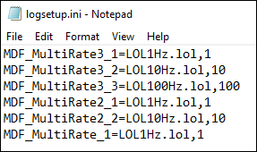
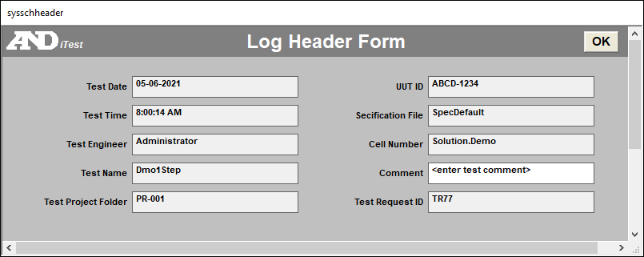
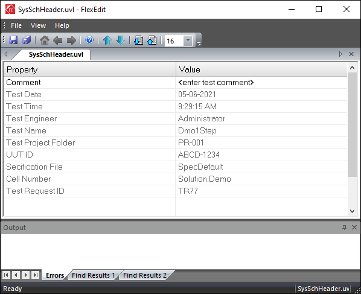
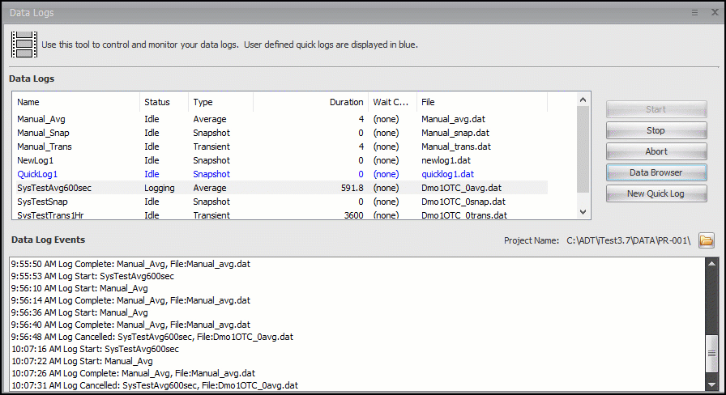
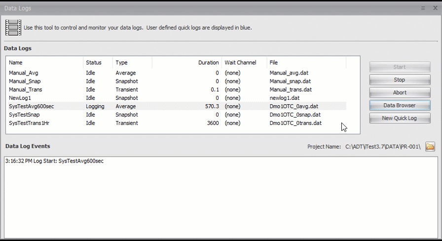

iTest User's Guide
The iTest data logging feature enables you to create, save, and use data files for reporting and analysis. Data is primarily logged in ASCII, a tab delimited format which is compatible with Excel, Uniplot, Matlab, and other common data analysis tools. These data files are stored in the iTest project folder located in the $DATADIR.
Data logs are composed of three different parts: information from the data log editor, log order lists, and log header forms. Combined, these elements allow you to create logs customized for your testing needs. The first step to creating a data log is to define the log header form. You can then create a log order list file and use the data log editor to combine the different parts to create the data log.
Data logging editors can be found in Test Manager or SolutionBuilder. These editors utilize log order lists and log header form files to define the details of the outputted data file. For more information on using Data Logging editors in Test Manager or SolutionBuilder, refer to the See Also section. The following sections describe the general process of data logging in iTest.
iTest includes a built-in, event-driven data recorder with a circular buffer used to record data at a user-defined rate and duration. For more information on using and configuring Blackbox data logging, refer to the See Also section.
Aside from selecting the Log Order List and the Log Header Form, there are some additional components and settings that are available for each data log.
The data log type defines how data is obtained over the course of a running test. Data log types include average, snapshot, and transient. The following sections detail each data log type.
 |
NOTE: | Unless otherwise noted, each data log type only supports the DAT (i.e., ASCII) data format. |
Average data logs record the average values for selected channels over a defined period of time and rate as well as other optional statistics.
Snapshot data logs record a single instance of the selected channels.
Transient data logs continuously record selected channels for a defined period of time and rate. The transient data log type supports the DAT, MDF, MDF Multi-rate, and BIN data formats. Transient logs also support time aligning channel values. If using channel substitution (e.g., %<CLOCK_TIME>%) in the output file name, then the output file name will include the channel value as of when the data log was started.
These logs will accumulate up to a maximum of (2GB - 5MB) of raw data before writing the output file. This output file may be further split into multiple smaller files based on the AutoFileIncrement, MaxConvertedFileSizeMB, and MaxDataFileSizeMB powertek.ini settings; refer to their entries in the Powertek.ini Settings section below or the iTest INI Options documentation for more information. For more information about transport delay and time alignment, refer to the Transport Delay section.
Data logs can be outputted in four different formats: DAT, MDF, MDF Multi-rate, and BIN. DAT files are more common and can be used for all data log types, whereas MDF, MDF Multi-rate, and BIN can only be used for Transient data logs. When data files are created, they are saved to a sub-folder in the $DATADIR location.
iTest data (DAT) files are tab-delimited ASCII formatted files. Each file consists of three sections including the header, the data descriptions, and the data values. For complete information, refer to the iTest ASCII Data File Format documentation.
Transient data logs can be outputted as Measurement Data Format (MDF). MDF files contain the raw measurement data and any associated metadata. It utilizes a compressed binary format to reduce the size of the data which makes it an efficient option for saving space and storing data quickly. Data logs outputted as MDF files will have the file extension .mf4.
|
NOTE: | MDF files are an ASAM standard. |
MDF Multi-rate files support up to three LOL files, each having their own rate. These LOL files are defined in the logsetup.ini file; this file resides in the same location as the logsetup.dat file and must be manually created/updated using an ASCII text editor. An example of the logsetup.ini file is displayed below:
|
NOTE: | The logsetup.ini file is stored in the $SUPPORTDIR/Data folder by default. The location can be modified using the LogSetupFilePath powertek.ini setting. |
Logsetup.ini File

When using this format as the Output Type in the Data Log editor, the Rate (Hz) and LOL values are ignored.
The LogSetup.ini file entry format is: <logname>_<number>=<lolfile>,<rate>.
Where:
<logname> is the name of the defined log. This is not the name of the output file.
<number> is the numbered (1 - 3) instance of the log.
<lolfile> is the name of the Log Order List (LOL) file, including the .lol file extension; e.g., SysHeader.lol.
<rate> is the rate the log is to run at in Hz. This value must be an even multiple of the system rate or 1kHz, if kHz logging is enabled.
You can also save the outputted data of a transient log as a binary (BIN) file. BIN files omit the conversion process and retain data in its native binary format. When this log type is enabled, iTest generates two files for every log:
The BIN filename format is: <logname>.<index>.bin.
Where:
<logname> is the name of the defined log.
<index> is the number of logs created for that log. The value starts at 00000 and increases as 00001, 00002, 00003, etc.
The .DAT file will contain an additional line, similar to the example below:
Example:
BINARYFILE=<logname>.<index>.bin
|
NOTE: | Using this format is the responsibility of the customer and requires the A&D Technology supplied document defining the syntax of iTest native binary format. Additionally, viewing data in binary format requires a custom parser. Any data saved in binary format will not be viewable in LabCentral or other standard viewers. |
Each data log allows for up to 3 mailslot messages to be sent immediately before or after a data log is taken. The post-log actions are performed after the data file is generated. Depending on any latency due to the time required to generate the final data file, there may be a short delay before the mailslot messages are sent.
A wait channel can be designated for a data log. The log will wait for this channel to be set to a non-zero value before it starts recording data points. This allows for synchronization of the start of data logging with completion of any pre-log actions.
Transport Delay refers to the number of seconds to delay recording of signal data, so that it aligns with the slowest input. This is designed to time-shift slow data such as emissions and allow it to align with instantaneous data such as speed and torque. The resolution of time is dependent on system scan rate for your system. The Transport Delay affects transient data logs and time aligned channels. All channels that are configured with a transport delay time will be delayed by the number of seconds in the Transport Delay column of the channel definition editor.
A log order list (LOL) is a list of channels that are logged to the data file. Each row in the file defines a channel logged to the outputted data file. Log order lists can be added using the editors in Test Manager or SolutionBuilder. LOL file contents can also be modified using FlexEdit. Alternatively, FlexEdit's pre-built DLL plugin editors also allow modifying LOL files pertaining to their supported device.
|
NOTE: | Log Order List files use the .lol file extension and are stored in the $SUPPORTDIR/Data folder by default. Their location can be modified using the LogListFilePath powertek.ini setting. |
The log order list editor descriptions can also be found in the table provided below.
LOL Editor Descriptions
| Column | Description |
| Channel | Displays a list of channels to select from. This channel will be added to the outputted data file. Note: The value entered in this field reflects what is displayed. If the customer name is entered it will display the customer name. This column is sortable. |
| Alias/Customer Name | Indicates the selected channel's alias or customer name. You can change the column type by right-clicking anywhere within the editor and selecting the option Show Customer Name/ Show Alias, as applicable. This column is read-only and cannot be edited. Information will be automatically populated in this column, depending on the channel name selected. |
| Module ID | Indicates the module ID to which the channel belongs. This column is read-only and cannot be edited. |
| StdDev | Computes the standard deviation over the average period. In the data file, the StdDev column is labeled as <channelname>_STDDev. |
| Min | Computes the minimum value detected during the average period. In the data file, the Min column is labeled as <channelname>_Min. |
| Max | Computes the maximum value detected during the average period. In the data file, the Max column is labeled as <channelname>_Max. |
| Delta | Displays the difference between the channel value at the start of the log and the channel value at the end of the log. In the data file, the Delta column is labeled as <channelname>_Delta. |
| CV | The coefficient of variance. In the data file, the CV column is labeled as <channelname>_CV. |
| RMS | The root mean squared. The CV column is labeled as <channelname>_RMS. The formula is: |
| Data Quality | Enables the logging of high and low data quality values. This adds two new columns to the outputted data file labeled: <channelname>_DQHigh and <channelname>_DQLow. To use this feature, high and low data quality must be enabled for the specified channel via the Edit Channel dialog. If this has not been set up, the checkbox in this column will be disabled. For more information, refer to the iTest Data Quality documentation. |
|
NOTE: | The statistical values are meaningful only for average logs. Snapshot and transient logs ignore the statistics columns. |
Virtual array channels used in a Log Order list must reference an index unless it is a non-Blackbox log order list used in a battery (BTS) system. For more information regarding logging array channels, refer to the Array Elements and Logging documentation.
Log header forms are used to define the list of keyword-value pairs that appear at the top of the data file known as the header. They can also be used to present a dialog to the operator before starting a test, prompting them to enter data. The log header form is created using the Log Header Form editors in Test Manager or SolutionBuilder. The log header form files are referred to as user variable list files (UVL) and use the .uvl file extension.
|
NOTE: | Log header form files are stored, by default, in the $SUPPORTDIR/Varlists folder. This can be modified using the UserVariableListPath powertek.ini setting. |
 |
WARNING: | Header data written to a data log file does not change once the file is created even if the data log is taken multiple times and writes to the same file. |
You can use array channels in UVL files with a static index or no index. If a static index is used, the name will be used as it is in the header of any data logs using the UVL file. If the array channel in the UVL file has no index specified, then it will use the index passed to the STARTLOG command. The unindexed channel name appears in the header of the data log; however, the value comes from the indexed element specified by STARTLOG. For more information regarding logging array channels, refer to the Array Elements and Logging documentation.
UVL files can be used to create a screen for the operator to enter test specific values at the start of a test. There are two methods for displaying this screen.
Method 1 (iTest Console only): Send the Softpanel mailslot message $NEWFORM;filename.uvl
Method 2 (AutomationPanel only): Use FlexEdit to present the form to the operator using the Softpanel mailslot message $FlexEdit;filename.uvl.
The following examples demonstrate these screens:
Message:
$NEWFORM;SysSchHeader.uvl
Operator Screen Using $NEWFORM

Message:
$FlexEdit;$SUPPORTDIR/varlists/SysSchHeader.uvl
Operator Screen Using $FlexEdit

The master.ini file supplies values to Datared when writing header values to data logs. Normally, the values for each channel of a UVL are written to the master.ini file via the tools launched by either the $NEWFORM or $FlexEdit mailslot messages to Softpanel. When the user saves from either of these screens, the data is written to the RDB and the master.ini file. If a channel does not have an entry in the master.ini file, then the current value of that channel will be read from the RDB instead.
When datared receives a binary file to convert to ASCII, the following sequence of tasks occurs:
LastUserVariableList powertek.ini entry.
These settings impact the generated data log files.
AutoFileIncrement is a powertek.ini setting that activates automatic data log file splitting. When AutoFileIncrement=FALSE, the output file is still automatically split when the binary file size reaches 2GB - 5MB.
The criteria used to determine when to split the data log file is encapsulated in the MaxDataFileSizeMB powertek.ini setting when AutoFileIncrement=TRUE. The log header information will be replicated in each file. Each generated data file has a .##### number appended to the base name. The range of this number is 0.00001 - 0.99999. The base data log filename is determined when the log is started even when using channel substitution (e.g., %<CLOCK_TIME>%). For example, an output data file name that includes %<CLOCK_TIME>% may be named NewLog1_4813.3901367188.00000.dat and the next file would be named NewLog1_4813.3901367188.00001.dat.
If a new data log is started and shares the name of a previously split data file, then it will append to the last file in the sequence until it meets the criteria to split the data file. For example, if there were ten split instances of the SysManual_Trans log, then it will append to the last one (i.e., SysManual_Trans.00009.dat) instead of SysManual_Trans.dat.
This setting is only valid when used with Transient data logs. Other limitations may be present based on other powertek.ini settings used in conjunction with AutoFileIncrement.
DataredStringMap is a powertek.ini setting used by Datared to map a value to a string before writing it to the .dat file. This setting has the potential to reduce your requirement for Virtual String channels by allowing you to use numerics in VCL which are automatically replaced with string values in the built data log file.
Format of DataredStringMap: <ChannelName>,<PickListFile>;<ChannelName>,<PickListFile>
Where <ChannelName> can be channel name, alias, or customer name. Each group of Channel-Picklist file is separated by a semi-colon.
The picklist file is located in the $SUPPORTDIR\PickList\ directory, and it is a comma-separated file with a numeric value in the first column and a string value in the second column, e.g.,:
1,charge
2,discharge
3,stop
4,idle
Example: DataredStringMap=MyChan1,ModeValueMap.pkl;MyChan2,StatusValueMap.pkl
If the LOL file changes since the last time data was logged, the generated data log will not append to the pre-existing log file. Rather, it will write to a new file that has a .###### number appended to the base name, similar to when AutoFileIncrement=True. The MaxDataFileSizeMB, MaxConvertedFileSizeMB, and AutoFileIncrement powertek.ini settings can also affect how data files are split as they are being generated.
When the DataRedIgnoreLOLChanges setting is set to TRUE, then new logs will use the last PARAMS line as the header if the LOL file changes since the last time data was logged. Missing channels will have -999999 as their value.
If the ExcludeDisabledModuleLOL setting is set to TRUE, channels in the Log Order List that include the disabled module ID as part of their name will be excluded from the data file. ExcludeDisabledModuleLOL will be treated as FALSE if DataRedIgnoreLOLChanges is set to TRUE.
The date and time format for data files can be changed using the following powertek.ini settings: DataRedTimeStampSeconds, DRDateFormat, and DRTimeFormat. The time can be specified in epoch format (the number of seconds since January 1, 1970).
vsSysDate and the vsSysDateTime system channels. To learn more, see the iTest System Channels guide.This setting is a list of comma-separated .fil files that will be used to populate the Log Order List when the All Channels options is used. If this setting is not present when the All Channels option is used, then the system will log as many channels as possible, up to the system maximum.
The size in MB to limit the generated log (ASCII) file to before splitting the file. This is only applicable to .dat format data logs. This "splits" the data log into more manageable blocks as part of a post-processing action. The split data log files will have a .##### number appended to the base name, similar to automatic data log file splitting when AutoFileIncrement=True.
Requires AutoFileIncrement=TRUE. The size in MB to limit the binary file to before generating the log (ASCII) file. The minimum value is 1MB, and the maximum value is 2GB-5MB. This "splits" long data logs into more manageable blocks and helps prevent loss of data in catastrophic conditions. Due to the binary file being in a different format and not containing all of the content that will appear in its generated ASCII log file, it is possible for the generated data log file to be larger (or smaller) than the value of this setting. If this setting is missing, AutoFileIncrement uses a default size of 1MB to limit the binary file to before generating the log file.
Additional data.def fields can be added to data file headers using the RDBHeaderAdditions powertek.ini setting. These are rows of values added before Params and Units rows.
Example:
"RDBHeaderAdditions=""Field 1"", ""Field 2"", ""Field 3"" where Field 1, Field 2, etc. are the names of fields in data.def
The Log Start and StartLog data_engine mailslot messages and the STARTLOG VCL command support including a reference to a virtual output channel to record the progress of a data log. Refer to the applicable Reference List for more information about each of these instructions.
1 = Log started
0 = Idle
-1 = Error: unable to start log due to missing log order list (.LOL) file
-2 = Error: log already running
iTest data is logged to a sub-folder of the system's $DATADIR directory. This is referred to as a "project folder". You can modify the exact folder location with the DataArchive mailslot message to Data_Engine.
You can modify the active project during runtime using the following Data_Engine mailslot message:
DataArchive Open <ProjectName>
Where:
<ProjectName> is the name of the folder the data will be saved to.
When this command is executed, the following events occur:
DrHoldReviewDir, is set to the new project name entered in the command.
The Data Logs dialog is a tool that you can use to control and monitor your data logs. This dialog is available in both iTest Console and AutomationPanel by selecting Tools > Data Logs... from the main menu. The Data Logs dialog enables you to monitor the status and activity of active data logs that were started manually or via automated tests. From this dialog, you can start, stop, and abort logs as well as create quick (temporary) logs.
The Data Logs dialog below displays the start and completion of the Manual_Avg log. It lasts for four seconds and when completed a new data log event displays in the Data Log Events field. This entry indicates the completion time and the log's data file. The SysTestAvg600sec average log file is then aborted. When data logs are aborted, no .dat file is created.
Data Logs Dialog

The following tables describe the dialog interface and functionality.
Data Logs Columns
| Column | Description |
| Name | The name of the data log. |
| Status | The current status of the data log. Types include: Idle: The data log is currently inactive. Logging: The data log is currently active and logging data. Waiting for Channel: The data log is waiting until the wait channel is set to 1 before starting. |
| Type | The data log type. Types include average, snapshot, and transient logs. For more information, see Data Log Types. |
| Duration | The duration of the log. The value in this column counts down once the log is started and the status transitions from Idle to Logging. |
| Wait Channel | The channel the log will wait for before starting. The channel's value must be set to a non-zero value before the data log starts. The log's wait channel is displayed in parenthesis. |
| File | The name of the file outputted data is written to. This does not support including a filepath of any sort. |
Data Logs Actions
| Action | Description |
| Start | Initiates the selected log. |
| Stop | Stops a running average or transient log. The action creates an output file with all accumulated data up to the current point. |
| Abort | Cancels the running log. This does not create an output file. |
| Data Browser | Launches the Data Browser application. Note: The Data Logs dialog in iTest Console will display and launch the A&D Technology Data Miner tool. To access DataMiner, refer to the customer portal at support.aanddtech.com then add the DataMiner file to the $EXECUTEDIR folder. |
| New Quick Log | Opens the Quick Data Logs dialog to allow creation of new quick (temporary) data logs. |
Additional Fields
| Field | Description |
| Data Log Events | The Data Log Events text window displays messages received from the logging subsystem since the dialog was initialized. Each time the dialog is exited and restarted, the window is emptied. |
| Project Name | The project name field indicates the current project folder defined in the powertek.ini file's DRHoldForReviewDir setting. To browse other data files, click the project folder icon ( ) next to this field. |
The Quick Data Logs dialog is used to create temporary data logs. The logs display in the Data Log Status window until the iTest application is exited. When iTest restarts, all quick logs created in the previous session will no longer be available. Quick logs are used and managed similarly to permanent data logs; quick logs can be started, stopped, aborted, and viewed. In the Data Logs dialog, quick logs display in blue font. For complete descriptions of the dialog, refer to the Quick Data Log table below.
In the following graphic, a new quick log is created by clicking the New Quick Log button on the Data Logs dialog. The new quick log is an average log that has a duration of 60 seconds. It logs only the channels in the MAIN.lol file and data is saved to the QuickLog_Sept12_17.dat file. Quick logs display in blue font on the Data Logs dialog.
Data Logs Dialog

The Data Log Browser is an AutomationPanel application used to graph logged test data. When you select a project's data file, the header data and parameters automatically populate in the window. You can then select which parameters you want to display in the chart, view the plotted data, and evaluate the various data points. For complete information about this application, refer to the Data Log Browser documentation.
In the graphic below, the Data Log Browser is opened by clicking the Data Browser button on the Data Logs dialog. A project folder and data file are selected which then populate channel information from the log file in the Parameters and Header Data sections. Selecting parameters displays the information graphically on the chart and populates data values in the editor below the chart. In the chart, the zoom in/out functionality is used to view information for specific data points.
Data Log Browser